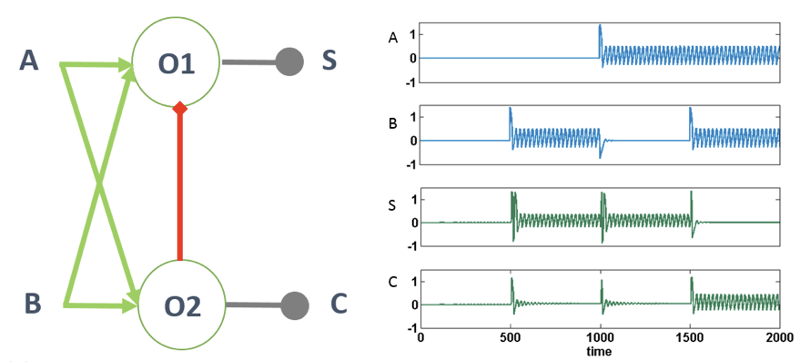
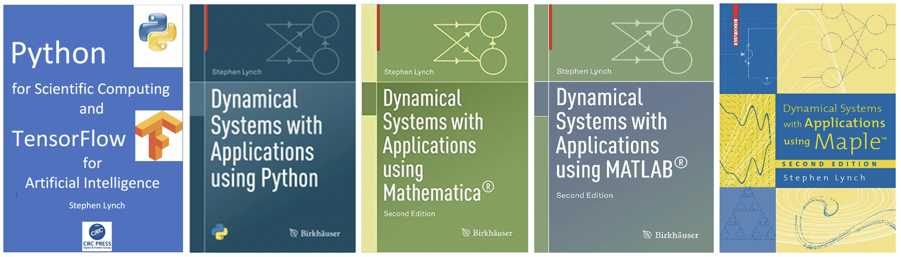
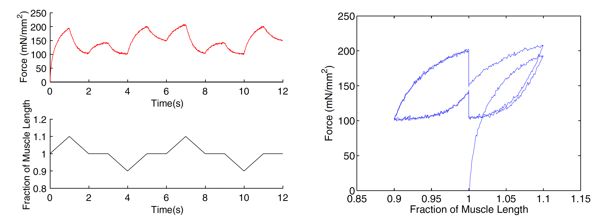

Professor
Stephen Lynch NTF FIMA SFHEA
RESEARCH INTERESTS
1. Binary Oscillator Computing:
Computing with threshold oscillators.
Our latest journal paper | Speakers for Schools video
2. Programming in the Mathematics Curriculum:
Two UK government reports published in 2018 recommend computational modelling and programming in the Mathematics curriculum.Programming in the Maths curriculum

3. The Second Part of Hilbert's Sixteenth Problem:
A problem in Pure Mathematics that is over 100 years old and still not solved.Research slides for Hilbert's 16th problem

4. Multifractal Analysis:
Using multifractal analysis to measure density, dispersion and clustering.

5. Nonlinear Optical Resonators:
Modelling light in optical resonators using ordinary and delay differential equations.

6. Hysteresis in Science:
When the behaviour of a dynamical system is history dependent.

A muscle model using springs and dampers. The figure on the right shows hysteresis in biological single fibre muscle.